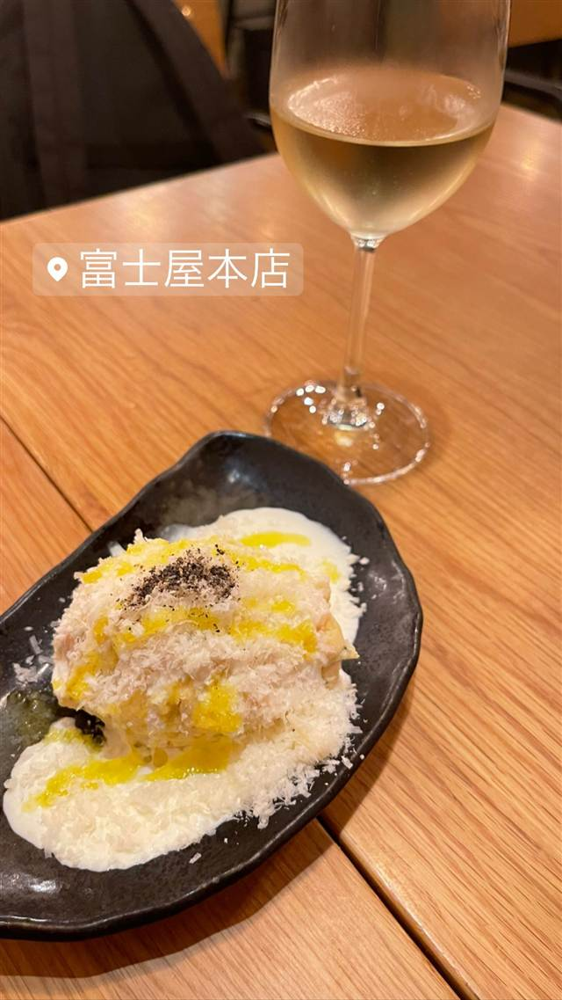
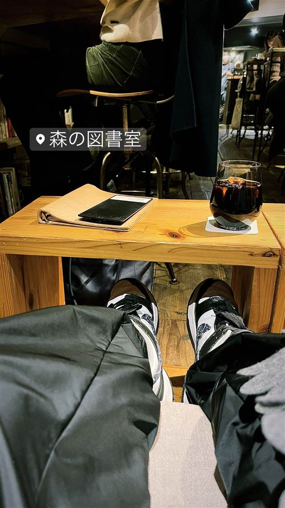

neo（ネーオ）
元焼き鳥屋を改装、予約不要で楽しむイタリアンナチュラルワイン
ネーオ neo
2021年開業、神泉のイタリアン「アウレリオ」「日和」を手がけるオーナー大本洋輔氏の3店舗目。20種類以上のイタリア産ナチュラルワインと小皿料理を、予約不要の立ち飲みスタイルで気軽に楽しめる。
TRIVIA
豆知識
- 神泉の人気イタリアン「アウレリオ」「日和」に続くオーナーの3店舗目
- 予約不可の立ち飲みスタイルは、ワインをより自由に楽しんでもらうための工夫
- 元は焼き鳥屋だった物件を改装して開業した
REVIEWS
世間の評判
3.56食べログ
野菜たっぷりパスタと立ち飲みワイン
- 野菜の旨みが重なるパスタの美味しさを評価する声が多く見られる
- 立ち飲みとは思えない本格的なクオリティを評価する声が多く見られる
- ワインが進みやすく気づくと単価が高くなると感じる人もいるようだ
- 平日夕方でもすぐ満席になるほどの人気店だという声が多く見られる
食べログ 口コミ479件
| 創業 | 2021年8月15日開業 |
|---|---|
| 系譜 | 神泉の人気イタリアン「アウレリオ」、2店舗目「日和」に続く、大本洋輔氏の3店舗目。 |
| 看板 | イタリア産ナチュラルワイン（20種類以上のグラスワイン）と小皿イタリアン |
| こだわり | 予約不要でふらっと立ち寄れる立ち飲みスタイルを採用し、ワインをより自由に楽しんでもらうことを狙った。 |
| どこから | 都心 |
| 営業時間 | 月〜日 15:00-23:00 |
| 予算 | 夜 ¥4,000～¥4,999 |
| 定休日 | 火曜・水曜 |
| 場所 | 神泉 東京都渋谷区円山町15-6 |
| メモ | 元は焼き鳥屋だった物件を改装。予約不可・立ち飲みのみ。営業は15時〜23時（フードは21時まで）。 |
食べたもの：ステーキとワイン
OFFICIAL
店からの知らせ
その日の限定や臨時の休みは、店のInstagramに出ます。
NEARBY
近い店・同じ系統の店
-
 ブランチ 神泉（南口徒歩約2分）
The3rd.Shibuya
南国リゾート風の店内、女性シェフのフレンチトーストが人気
昼 ¥2,000～¥2,999 夜 ¥3,000～¥3,999
ブランチ 神泉（南口徒歩約2分）
The3rd.Shibuya
南国リゾート風の店内、女性シェフのフレンチトーストが人気
昼 ¥2,000～¥2,999 夜 ¥3,000～¥3,999
-
 ワインバー 白金高輪駅
ドロゲリア サンクリッカ（Drogheria Sancricca）
内装や設備までイタリアから取り寄せた本場仕込みのジェラート
昼 ～¥999
ワインバー 白金高輪駅
ドロゲリア サンクリッカ（Drogheria Sancricca）
内装や設備までイタリアから取り寄せた本場仕込みのジェラート
昼 ～¥999
-
 ワインバー 恵比寿
ta.bacco
看板のない隠れ家で味わうRi-Calica姉妹店の馬肉タルタル
夜 ¥8,000～¥9,999
ワインバー 恵比寿
ta.bacco
看板のない隠れ家で味わうRi-Calica姉妹店の馬肉タルタル
夜 ¥8,000～¥9,999
-

ワインバー 渋谷駅 富士屋本店 ワインバー 1883年創業の酒販店がルーツで渋谷の立ち飲み文化はこの角打ちから始まった 昼 ¥1,000～¥1,999 夜 ¥5,000～¥5,999 -

ワインバー 渋谷駅 森の図書室 『渋谷に夜の図書館を』1時間制で読書と飲食を楽しめる空間 昼 ¥1,000～¥1,999 夜 ¥1,000～¥1,999 -
 ワインバー 白金高輪駅
chet
ジャズの名にちなむ、生ハムと卵のスフレオムレツとナチュラルワイン
昼 ¥2,000～¥2,999 夜 ¥4,000～¥4,999
ワインバー 白金高輪駅
chet
ジャズの名にちなむ、生ハムと卵のスフレオムレツとナチュラルワイン
昼 ¥2,000～¥2,999 夜 ¥4,000～¥4,999
ONSEN & SAUNA